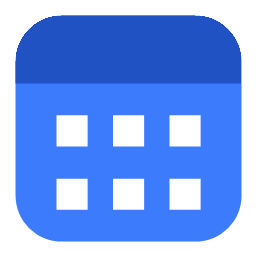

CalendarWidget
구글 캘린더를 Windows 바탕화면에 붙여 보여주는 가벼운 위젯
무엇을 하나요
- 구글 캘린더 일정을 바탕화면에 달력으로 보여줍니다. 다른 창 아래에 깔리고, Win+D를 눌러도 남아 있습니다.
- 날짜를 두 번 누르면 메모창이 열립니다. 한 줄이 그날의 일정 하나가 되어 구글 캘린더에 저장됩니다.
- 완료한 일은 취소선으로 표시할 수 있습니다.
- 동기화는 사용자가 버튼을 누를 때만 합니다. 평소에는 네트워크와 CPU를 쓰지 않습니다.
데이터는 어디에 있나요
일정은 각 사용자의 구글 계정과 그 사용자의 PC에만 있습니다. 이 앱은 별도의 서버를 두지 않으며, 일정이나 계정 정보를 개발자에게 보내지 않습니다. 자세한 내용은 개인정보처리방침을 확인해 주세요.
배포 범위
사내 사용자를 위해 배포하는 프로그램입니다. 설치 파일과 사용 안내는 사내 배포 담당자를 통해 받을 수 있습니다.